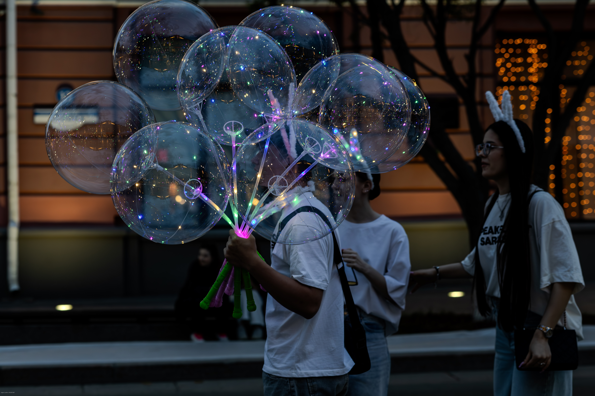

Two images were captured in the same conditions, but one is saved with high dynamic range (HDR), while the other uses standard dynamic range (SDR). The difference is more visible on HDR-capable displays.
If you do not see a noticeable difference, your display or browser may not support HDR, or HDR may be disabled in system settings.
The images fade into each other every 10 seconds to show the difference when HDR is enabled.
